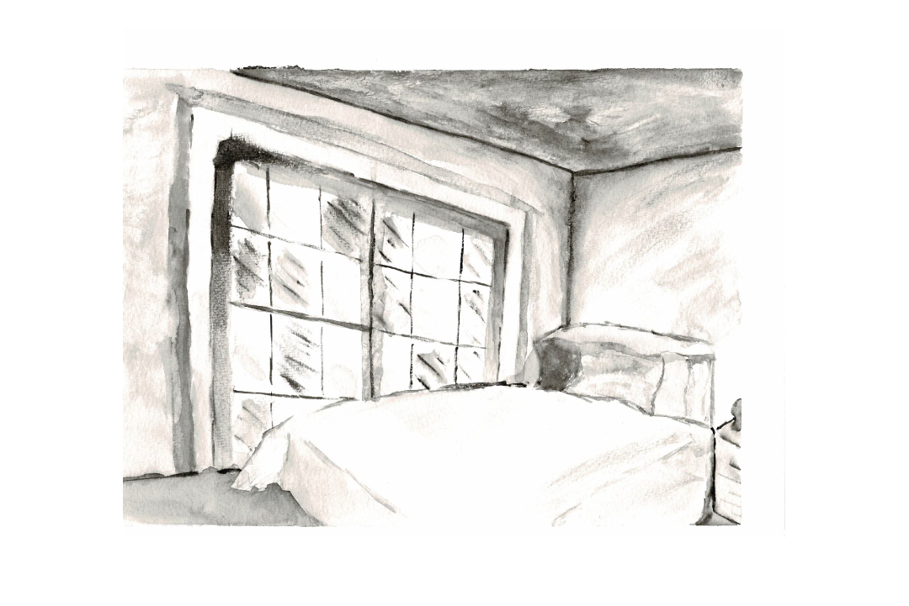

Portfolio
Utiliser le carrousel pour en savoir plus
01.Projet Synthèse
Date : Mars 2018.
Pour notre dernier projet, j'avais comme mandat de créer le site Web de mon programme collégial.
J'ai conçu le site Web, intégré mon design et tout programmé à partir de zéro. Le site Web comprend un formulaire de contact, un carrousel composé des différents projets réalisés par mes collègues et un flux de médias sociaux. J'ai choisi
des couleurs contrastées par rapport aux tendances de l'année 2018. J'ai également décidé de créer un site Web de type "one-page", divisé en sections, pour faire face à la limitation du contenu qui était à ma disposition.
Je ne peux malheureusement pas vous fournir de lien, mais l'idée principale est représentée dans les images ci-dessus.
Langage(s) de programmation : JQuery, Javascript, Typescript, PHP, HTML 5, CSS3.
Logiciel(s) utilisé(s) pour les médias : Illustrator, Photoshop, Sketch.
02.Application Web - Quiz
Date : Décembre 2017.
Dans le cadre du cours de réalisation de produits numériques interactifs III de la technique d'intégration multimédia du cégep Sainte-Foy. J'avais comme mandat de créer une application ayant comme principal but la résolution de
questions
avec plusieurs choix de réponses (un quiz).
Langage(s) de programmation : PHP, Javascript, jQuery, CSS3, HTML, MySQL, Heroku, ServiceWorkers.
Logiciel(s) utilisé(s) pour les médias : Illustrator, Photoshop.
Lien vers le Quiz
03.Design Web - Bibliothèque en ligne
Date : Mars 2017.
Le mandat de ce projet consistait à concevoir le site Web d'une bibliothèque en ligne. J'ai décidé d'utiliser des couleurs sobres en conjonction avec des couleurs avec un contraste élevé. Les images sont mises en avant puisqu'il
s'agit d'une bibliothèque. Je voulais un design complet, mais doux pour les yeux. Rien d’imposant, puisque le contenu était plutôt massif. C'était en équipe de trois, je m'occupais de l'apparence et du contenu du site (front-end) alors
que mes coéquipiers s'occupaient du côté serveur (back-end).
Langage(s) de programmation : PHP, Javascript, jQuery, CSS3, HTML, MySQL.
Logiciel(s) utilisé(s) pour les médias : Axure, Sketch.
04.Design Web - Brûlerie TIM
Date : Septembre 2016.
Pour ce projet, j'avais comme mandat de créer le design pour un site Web fictif d'une brûlerie de la technique d'intégration multimédia. Puisque le contenu était abondant, je suis allé pour une apparence sobre et des couleurs chaudes
pour
accentuer le sentiment chaleureux d'une brûlerie. Les images sont également au coeur du site puisqu'il s'agit principalement d'un site de vente.
Logiciel(s) utilisé(s) pour les médias : Illustrator, Photoshop, Sketch.
05.Design Web - Cafétéria
Date : Octobre 2016.
Pour ce projet, je devais concevoir une application fictive pour la cafétéria du cégep de Sainte-Foy. Il n'y avait aucune contrainte sur le style, les couleurs, les polices de caractères, etc. J'ai décidé d'utiliser des tons plus
sombres pour les couleurs principales, chacune des couleurs représentes une catégorie de repas (végétarien, pâte, etc.).
Logiciel(s) utilisé(s) pour les médias : Illustrator, Photoshop, Sketch.
06.Jeux 2D
Date : Mai 2017.
Ce projet était individuel et réalisé dans le cadre d'un cours de programmation de deuxième année. Cela consistait à créer un jeu en 2D à la troisième personne à partir de zéro. Ce qui signifie que nous devions créer tous les médias,
programmer le jeu et intégrer la page Web dans laquelle le jeu est affiché. Nous devions créer une histoire, alors j'ai décidé de créer un jeu d'action se passant pendant la deuxième Guerre Mondiale. Le protagoniste a pour objectif de
libérer une ville contrôlée par les nazis.
Langage(s) de programmation : Programmation orientée objet, Javascript, PHP, HTML5, CSS3.
Logiciel(s) utilisé(s) pour les médias : Illustrator, Animate.
07.Motion Design - Animation liquide
Date : Mars 2018.
Dans le cadre du cours de projet de recherche de la technique d'intégration multimédia, j'avais comme but d'expérimenter certains aspects techniques en lien avec mon programme. Je me suis alors spécialisé en motion design.
Étant un passionné de ce domaine depuis longtemps, ce ne fût pas un choix difficile. Cette animation est ma 2e expérimentation sur ce sujet. J'ai utilisé(s) des tutoriels pour m'aider à créer ce test.
Langage(s) de programmation : PHP, Javascript, jQuery, CSS3, HTML, MySQL, Heroku, ServiceWorkers.

08.Motion Design - Initiale
Date : Février 2018.
Dans le cadre du cours de projet de recherche de la technique d'intégration multimédia, j'avais comme but d'expérimenter certains aspects techniques en lien avec mon programme. Je me suis alors spécialisé en motion design.Cette
animation est ma 1e expérimentation sur ce sujet.
Langage(s) de programmation : PHP, Javascript, jQuery, CSS3, HTML, MySQL, Heroku, ServiceWorkers.
09.Dessin - Le mythe de Pandore
Date : Décembre 2018.
Dans le cadre du cours de génération d'images : dessin, je devais créer un dessin représentant un mythe de mon choix. J'ai décidé de baser mon dessin sur le mythe de Pandore. J'ai représenté le moment de sa création par les dieux de l'Olympe.
Matériel(aux) utilisé(s) : Stylo à encre noir.

10.Dessin - Peinture d'une chambre
Date : Octobre 2018.
Dans le cadre du cours de génération d'images : dessin, je devais créer plusieurs dessins représentant un environnement que je visite quotidiennement. Pour celui-ci, j'ai décidé de peindre ma chambre en utilisant bien l'ombrage présent lors de la séance de création.
Matériel(aux) utilisé(s) : Aquarelle.
11.Dessin - Peinture d'une forêt
Date : Novembre 2018.
Dans le cadre du cours de génération d'images : dessin, je devais créer plusieurs dessins représentant un environnement que je visite quotidiennement. Pour celui-ci, j'ai décidé de peindre la forêt présente proche de chez moi. J'ai mis l'accent sur le contraste entre la clairière et le boisé qui l'entoure. L'ombrage était un point très important du processus de création.
Matériel(aux) utilisé(s) : Aquarelle.
12.Animation - logo android
Date : Mars 2016.
Le mandat de ce projet était de créer une animation de 15 à 20 secondes pour la marque de notre choix. J'ai choisi Android pour la simplicité de son logo puisque ça apporte beaucoup plus de liberté sur le niveau créatif. J'ai décidé de
lui donner un aspect jovial et énergique en le faisant apparaître comme une fusée saluant le visionneur par la suite. C'était un projet individuel, alors j'ai conçu l'idée principale, créé les médias (j'ai reproduit le logo original) et
les ai animés.
Logiciel(s) utilisé(s) pour les médias : After Effetcs, Premiere Pro.
13.Vidéo promotionnelle de la TIM
Date : Décembre 2017.
Dans le cadre du cours de montage médiatique plurimédia, j'avais comme mandat de créer une courte publicité de ma technique dans le but de mettre en valeur ce domaine particulier à l'aide des logiciels d'Adobe comme Illustrator, After
Effects, etc.
Logiciel(s) utilisé(s) pour les médias : After Effetcs, Premiere Pro.
14.Court métrage
Date : Décembre 2016.
Dans le cadre du cours de montage vidéo, j'avais comme mandat de créer un court-métrage de mon choix ayant pour objectif de mettre en premier plan tout ce que j'avais appris pendant la session. C’était un prétexte pour nous inciter à
explorer les aspects moins conventionnels du montage vidéo.
Les thèmes que j'ai choisis d'explorer étaient la nature et l'aventure, avec une fin inattendue.
Logiciel(s) utilisé(s) pour les médias : After Effetcs, Premiere Pro.
Caméra : Nikon 3200.